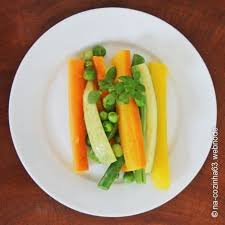

Um dia eu estava indo comer um pouco de sobras da geladeira, foi então que eu me
deparei com um pouco de legumes que tinham sobrado de um outro dia.

Porém, quando eu comecei a mastigar, percebi um gosto estranho,
como se fosse algo estragado, todavia ignorei por pensar que podia ser só algo da
minha cabeça. Depois começei a passar mal e vomitei.Meu pai tbm comeu e passou mal